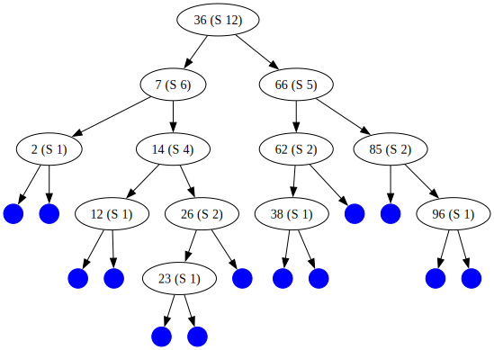

Part C: Data structures: Weight-balanced trees (40 points)
Introduction
In this section, we are going to implement a non-trivial data structure called a "weight-balanced tree", or WB tree for short. The main reason for this is to demonstrate that even fairly complex data structures can often be implemented simply using OCaml's algebraic datatypes.
WB trees are an example of a "self-balancing binary search tree". There are a number of other self-balancing binary search tree datatypes, including red-black trees, AVL trees, 2-3 trees etc. WB trees are interesting because they contain parameters that allow you to tune the tree implementation for faster lookup or faster insertion (but not both!).
Note
The discussion of this data structure will be fairly lengthy, because it's rather complicated. However, don't be intimidated: the amount of code you need to write is quite small. Most of the code for the algorithm is supplied to you; your job will be to fill in the implementation of a few critical points of the algorithm. We will be very clear about what you need to do, so even if you find the algorithm confusing, you should still understand what code you need to write.
Before we get into the details of this data structure, let's explain why such a thing is desirable. Many practical applications of interest require set-like or map-like collections of values which have (at least!) the following requirements:
-
You have to be able to find a particular value in the collection as quickly as possible (or report that it isn't there).
-
You have to be able to add a new value to the collection as quickly as possible.
-
The collection mustn't duplicate the values searched over.
The difference between a set and a map is that sets are just the values in the collection, while maps have an associated value for each "key" value in the map. Our WB trees will implement sets of integers, which is about as simple as it gets.
Note
Don't confuse "maps" as described here with the List.map function,
which is a completely different kind of thing.
The "maps" we're talking about here are key-value mappings,
kind of like Python dictionaries.
(That's all we're going to say about maps from here on.)
If we didn't care about efficiency, we can easily implement a set of integers using a list of integers. To find whether a particular integer is in the set, we just have to search through the list. This is an \(O(N)\) operation, where \(N\) is the length of the list, so it's rather slow. To add a value to the list (making sure there are no duplicates), we can just search for the value in the list; if it's found, there is no need to add it, and if not, we can add it to the front of the list. This is also \(O(N)\). (If we don't mind repeated elements, we can just add it to the front of the list without searching, which is \(O(1)\).)
Somewhere along the line, someone realized that if we arranged the data in a binary tree-like data structure, we can potentially get much faster searches (\(O(log\ N)\) instead of \(O(N)\)) and also get \(O(log\ N)\) insertions. To do this, we create nodes containing three things: a data value, a left subtree, and a right subtree. A subtree can be a leaf (no data) or another node. In OCaml, such a data structure would look like this:
(* Assume we are storing only integers in the tree. *)
type tree =
| Leaf
| Node of int * tree * tree (* data value, left subtree, right subtree *)
We further stipulate that all the elements in the left subtree of a node are strictly less than the value at the node, and all the elements in the right subtree are strictly greater than the value at the node (this makes the tree an ordered binary tree). Clearly, this will only work if the values stored in the tree are orderable (like integers).
Note
Unfortunately, OCaml's type system isn't powerful enough to express the ordering constraint, so we have to enforce it in the functions we write that add values to the tree.
Searching through a tree like this is easy (you'll write the code below). Insertion is also easy: you simply walk down the tree until you reach a leaf where the new value ought to go, and then replace the leaf with a node whose two subtrees are leaves.
Note
Since we are implementing this data structure in a purely functional manner, we aren't really replacing anything. Instead, we create a new tree which has a different node in place of the one we want to "replace". Because most of the tree can be shared between the old and new versions, this is quite efficient.
If the tree is roughly balanced (the left and right subtrees of all nodes are about the same size), then looking up a value in the tree or inserting a value into the tree is \(O(log\ N)\), where \(N\) is the number of values stored in the tree. That's because on average, going to a left or right subtree of a node gets rid of about half of the values in the tree, and after \(log_2(N)\) divisions by two you will end up at a leaf.
Unfortunately, if you add elements to the tree naively, you can easily end up with an unbalanced tree, where some branches of the tree are empty and others have large numbers of nodes. In the worst case, the tree will only have nodes on one side (left or right) and then it's no better than a linked list. This means that searching through the tree will be \(O(N)\), not \(O(log\ N)\).
There needs to be some way to make sure that the tree stays balanced when you add new values to it. If you can guarantee that the tree stays balanced, you can guarantee that searching for values in the tree and adding new values to the tree are \(O(log\ N)\) operations, which is acceptably fast for many applications.
Self-balancing binary trees generally have additional data in each node which helps in the balancing operation. In the case of WB trees, this data is called a "size" and is an integer >= 0. Leaves have a size of zero (this does not need to be stored explicitly in the tree), while nodes have sizes > 0. The size of a node is simply the number of nodes (not leaves) in the subtree rooted at the node. So, for instance, a node with two leaves as children has a size of 1, while a node with one leaf child and one node child which itself has two leaf children has size 2, etc.
Some terminology we'll use:
-
The "root node" of a tree is the topmost node of the tree.
-
A "child node" of a node is the root node of one of its subtrees.
-
A "parent node" of a node is the node which has the original node as one of its child nodes. Note that root nodes have no parent node.
-
A "grandparent node" is the parent node of a node's parent node.
-
"Naively adding" a value to a tree is adding a node containing the value to the tree without worrying about whether the tree becomes unbalanced or not.
For the purposes of these terms, a leaf is considered a kind of node.
Here is the definition of the WB tree datatype:
This is the same as the definition of tree given above,
except that there is an extra int value stored at each node
representing the size of the node.
Note that the first int value in the node is the size
and the second one is the integer value being stored at the node.
After that comes the left and right subtrees of the node,
which can be Leaf nodes or not.
A WB tree must satisfy the following invariants:
-
A node's value must be strictly larger than any value stored in its left subtree and strictly smaller than any value stored in its right subtree. (This is the order invariant that all ordered binary trees must have.)
-
The data values stored in the tree must contain no duplicates.
-
The size of a
Leafis zero. -
The size of a
Nodeis the sum of the sizes of its children, plus 1. -
Subtrees of a
Nodemust satisfy a balancing condition, which is parameterized around a positive constant calleddelta. Specifically, the condition is:(We will use a value of 3 for
delta.) What this condition means is roughly that neither subtree of a node is allowed to have a size more thandeltatimes the size of the other subtree. If this is true, the tree will be balanced enough to support \(O(log\ N)\) lookups and insertions.
Note that some of these invariants can (and will) be violated temporarily while inserting new values into an WB tree, but then the tree must be readjusted so that the invariants again apply.
The WB trees we will be working with are purely functional, so (for instance) inserting an integer into a tree will yield a new tree instead of changing the old one.
Examples
Let's look at some WB trees. We'll add some integers between 1 and 100 to an empty WB tree and see what the resulting trees look like. In some cases, adding a number to a tree in a "naive" way would result in an unbalanced tree (which is not a valid WB tree); in that case, after adding the node we will have to rebalance the tree to preserve the invariants. We will look at the tree before and after rebalancing, so you can get an idea of what the balancing operations do before we describe the code you will need to write. We will mention which rebalancing operations we are using; the details of these operations will be discussed in the next section.
This is a leaf node (which is also an empty tree). It doesn't store any data. It has size 0. There's not much else to say about it.
Adding the number 2 creates a node whose two subtrees are both leaves.
The 2 in the node label is the value stored in the node.
The (S 1) says that this node has size 1.
This has to be the case because its subtrees are both leaves,
which have size 0,
and the size of a node is always exactly one higher
than the sum of the sizes of its subtrees.
Adding the number 66 creates a new node
on the right subtree of the node containing 2.
The new node has size 1 (as all new nodes must have).
No rebalancing is necessary.
Adding the number 36 creates a new node
on the left subtree of the node containing 66.
Again, no rebalancing is necessary.
Adding the number 85 creates a new node
on the right subtree of the node containing 66.
At this point, we have to rebalance the tree
because the size of the tree rooted at 66 is 3
whereas the size of the other child of node 2 is 0.
Invariant #5 says that adding 1 to both sizes gives a ratio of 1 to 4,
which is more than delta (3).
The rebalancing operation we do is called a single left rotation of the tree rooted at 2 (i.e. the entire tree). This is one of four different kinds of primitive tree balancing operations; we will describe it in the next section. Note that the tree now looks balanced and is still ordered (invariant #1).
Adding the number 96 doesn't cause the tree to become unbalanced
(at least, not by the criteria of invariant #5, which is good enough for us).
Adding the number 7 doesn't cause the tree to become unbalanced either.
Adding the number 26 gives an unbalanced tree.
Invariant #5 is violated at the subtree starting from the node with 2;
its left subtree has size 0 and its right subtree has size 3,
so the ratio is (3 + 1) to (0 + 1) which is 4 to 1 (more than delta).
Therefore, we have to rebalance.
This is the result after rebalancing.
The rebalancing operation here is called a double left rotation
and is more complicated than the single left rotation we saw previously.
In addition to the parameter delta,
there is a second parameter gamma which decides,
when a rebalancing operation needs to occur,
whether a single or double rotation needs to happen.
You don't need to worry about the details of this,
because the code that handles this will be supplied to you
(your job will be to implement the rotations).
Adding the number 12 doesn't cause the tree to become unbalanced.
Adding the number 62 doesn't cause the tree to become unbalanced.

Adding the number 38 doesn't cause the tree to become unbalanced,
but it's clear we can't keep this up forever.
The subtree rooted at 7 is starting to look like
it might need a rotation soon.
Adding the number 14 makes the tree rooted at 7 unbalanced (why?).
We need to rebalance.
We do a single left rotation at the tree rooted at 7,
and this restores the balance.
Notice that the balance criteria at the root node
makes the tree just barely balanced there
((8+1) / (2+1) is a ratio of 3 to 1);
adding anything to the left subtree will certainly make it unbalanced again.
Adding the number 23 indeed makes the tree unbalanced.
First, the node with 26 is unbalanced.
This requires a double right rotation around that node.
Even when this happens,
the root node (with the number 66) is also unbalanced;
that will require a single right rotation to rebalance it.
It's important to realize that rebalancing a tree after adding a new node can require more than one rotation. We work from the outermost parts of the tree inward, rebalancing as needed.

After all these rebalancings, the tree is once again in good shape. At this point, we have seen all four of the tree rotations we will need for rebalancing.
This concludes the WB tree examples. We hope you now have a clearer idea of how WB trees work and how they stay balanced.
Tree rotations
In the examples given above,
we've seen that there are a number of balancing operations or "rotations"
that are done to make an unbalanced tree balanced.
Be aware that we don't require that the tree be exactly 100% balanced.
In the case of WB trees,
the balance criteria ensure that subtrees of a node can't contain
more than about 3 times the nodes of each other (if delta is 3),
which is enough to preserve
the \(O(log\ N)\) lookup and insert properties we want.
What the rotations do is
rebalance a tree while preserving the order invariant.
What kind of rotation you do
depends on the way in which the tree is unbalanced.
We've seen that WB trees have four different kinds of rotations:
- single left rotation
- single right rotation
- double left rotation
- double right rotation
When you do these rotations in the appropriate circumstances, the tree will become balanced and the order invariant will be preserved.
Here is what a single left rotation looks like. Starting from this:

We go to this:

In these diagrams, a and c are nodes while X, Y and Z are subtrees.
See if you can convince yourself
that this will not violate the order invariant.
Here is what a single right rotation looks like. Starting from this:
We go to this:
Note that a single right rotation simply undoes a single left rotation.
Here is what a double left rotation looks like. Starting from this:
We go to this:

In these diagrams,
a, b, c represent nodes
while X, Y0, Y1 and Z represent subtrees.
Here is what a double right rotation looks like. Starting from this:
We go to this:
Notice that the starting point of the double right rotation is the mirror-image of the starting point of the double left rotation, and that both rotations end up with the same tree.
That's all we have to say about rotations!
Inserting into a WB tree
Once you can do rotations, it's fairly easy to implement insertions into a tree so as to keep the tree balanced. Here is an outline of the algorithm.
Note
You don't have to implement this algorithm, since it's implemented for you (see below). You just have to implement the rotations.
First, insert the new value into the tree by following the branches based on the value to be inserted and the values at the nodes. If the new value is smaller than the node value, insert it into the left subtree, if it's larger, insert it into the right subtree, and if it's the same, then the new value is already in the tree so do nothing. Once you get to a leaf, replace it with a new node with the new value and two leaves as children. Of course, we want to do this functionally, so we aren't really replacing anything; we are building up a new tree as we go along out of the parts of the old tree. Therefore, the "replacement" step is to put in a new node with the new value in place of what was a leaf in the original tree; this new node has leaves for children.
Now that we have the new value in the tree,
we need to make sure that the tree is balanced,
and if not, we need to balance it.
The new node we just created is obviously balanced
(it has two leaves as children, both of which have depth 0),
so we look at the parent of that node,
and then the parent of that node,
and so on until we reach an unbalanced node
or until we reach the root of the tree.
We use the delta parameter and invariant #5
to tell us if the tree is unbalanced.
If we reach the root of the tree, we're done!
If we find an unbalanced node,
we have to decide what kind of rebalancing operation is needed.
If we added to a left subtree,
we need to do a right rotation,
and vice versa.
Whether we do a single or double rotation
depends upon the gamma parameter we mentioned above.
The criterion is:
(where \(\Gamma\) is gamma,
\(T_A\) is subtree "A",
and \(T_B\) is subtree "B".)
If \(weight(T_A)\) is less than
\(\Gamma\cdot weight(T_B)\),
do a single rotation;
otherwise, do a double rotation.
We use a value of 2 for gamma;
this has been proved to work correctly
and to be decently efficient.
The details of how this works are beyond the scope of this discussion,
but the code is supplied for you.
Once we rebalance around a node, we have to go up to the parent of the node and again check to see if we need to rebalance that node, and so on up to the root of the tree.
That completes our description of WB trees. Now we have to implement this in OCaml!
OCaml implementation and template code
Everything in this implementation
(and, indeed, in this entire midterm) must be purely functional.
Do not use imperative code anywhere.
So don't use ref, or the := or ! operators.
(There is one exception:
we provide a debug variable which is true by default;
it may help you with debugging.
Feel free to set it to false if you don't need it,
but don't remove it.)
Use the following code as a template for your solution. Don't leave anything
out, because the proper functioning of the data structure and the test scripts
require it. Your job is to fill in the code where it's marked failwith
"TODO" as well as construct the missing patterns where it's marked <??>.
Note
You can copy the entire block of code to your computer's clipboard by clicking on the icon in the upper-right corner of the code block.
(* Implementation of weight-balanced trees in OCaml. *)
let tree_debug = ref true
(* Parameters.
* - delta is used to decide if any rotation needs to be made at all
* - gamma is used to decide between a single and a double rotation
*)
let delta = 3
let gamma = 2
type tree =
| Leaf
| Node of int * int * tree * tree (* size, value, left/right subtrees *)
let get_size = function
| Leaf -> 0
| Node (s, _, _, _) -> s
let empty = Leaf
let singleton v = Node (1, v, Leaf, Leaf)
(* Build a node with the correct weight
from a value `v`, a left subtree `l`,
and a right subtree `r`. *)
let node v l r =
let w = get_size l + get_size r + 1 in
Node (w, v, l, r)
(* Are two subtrees balanced with respect to each other
* i.e. "relatively balanced"?
* Criterion:
* The "weight" of subtree b is <=
* delta times the "weight" of subtree a.
* "weight" is just the size + 1.
*)
let rel_balanced a b =
let wa = get_size a + 1 in
let wb = get_size b + 1 in
wb <= delta * wa
(* Is a single rotation indicated?
* Criterion:
* The weight of subtree a is less than gamma times
* the weight of subtree b.
*)
let need_single_rot a b =
let wa = get_size a + 1 in
let wb = get_size b + 1 in
wa < gamma * wb
(* Find the minimum element in a tree.
* This assumes that the tree is ordered. *)
let rec min_tree = function
| Leaf -> None
| Node (_, i, l, _) ->
begin
match min_tree l with
| None -> Some i
| Some l' -> Some l'
end
(* Find the maximum element in a tree.
* This assumes that the tree is ordered. *)
let rec max_tree = function
| Leaf -> None
| Node (_, i, _, r) ->
begin
match max_tree r with
| None -> Some i
| Some r' -> Some r'
end
(* Is a tree ordered? *)
let rec ordered = function
| Leaf -> true
| Node (_, i, l, r) ->
begin
ordered l &&
ordered r &&
match (max_tree l, min_tree r) with
| (None, None) -> true
| (Some l', None) -> l' < i
| (None, Some r') -> i < r'
| (Some l', Some r') -> l' < i && i < r'
end
(* Is a tree balanced with respect to the weight criteria? *)
let rec balanced = function
| Leaf -> true
| Node (_, _, l, r) ->
rel_balanced l r &&
rel_balanced r l &&
balanced l &&
balanced r
(* ----------------------------------------------------------------------
* Tree rotations and rebalancing.
* ---------------------------------------------------------------------- *)
let single_l v l r =
if !tree_debug then
Printf.printf "- single_l at tree rooted at %d\n" v;
match r with
| Leaf -> invalid_arg "single_l"
| Node <??> -> failwith "TODO"
let double_l v l r =
if !tree_debug then
Printf.printf "- double_l at tree rooted at %d\n" v;
match r with
| Leaf
| Node (_, _, Leaf, _) -> invalid_arg "double_l"
| Node <??> -> failwith "TODO"
let rotate_l v l r =
if !tree_debug then
Printf.printf "rotate_l at tree rooted at %d\n" v;
match r with
| Leaf -> invalid_arg "rotate_l"
| Node (_, _, rl, rr) ->
if need_single_rot rl rr then
single_l v l r
else
double_l v l r
let single_r v l r =
if !tree_debug then
Printf.printf "- single_r at tree rooted at %d\n" v;
match l with
| Leaf -> invalid_arg "single_r"
| Node <??> -> failwith "TODO"
let double_r v l r =
if !tree_debug then
Printf.printf "- double_r at tree rooted at %d\n" v;
match l with
| Leaf
| Node (_, _, _, Leaf) -> invalid_arg "double_r"
| Node <??> -> failwith "TODO"
let rotate_r v l r =
if !tree_debug then
Printf.printf "rotate_r at tree rooted at %d\n" v;
match l with
| Leaf -> invalid_arg "rotate_r"
| Node (_, _, ll, lr) ->
if need_single_rot lr ll then
single_r v l r
else
double_r v l r
(* ----------------------------------------------------------------------
* Membership testing.
* ---------------------------------------------------------------------- *)
(* Is a value a member of a tree? *)
let rec tree_member v t = failwith "TODO"
(* ----------------------------------------------------------------------
* Inserting values into trees.
* ---------------------------------------------------------------------- *)
let balance_l v l r =
if rel_balanced l r then
node v l r
else
rotate_l v l r
let balance_r v l r =
if rel_balanced r l then
node v l r
else
rotate_r v l r
(* Insert a value into a tree with rebalancing. *)
let rec insert v t =
match t with
| Leaf -> singleton v
| Node (_, v', _, _) when v = v' -> t
| Node (_, v', l, r) ->
if v < v' then
(* Adding to the left means you may have to rotate to the right. *)
balance_r v' (insert v l) r
else
(* Adding to the right means you may have to rotate to the left. *)
balance_l v' l (insert v r)
Here are the functions you need to implement:
1. [8 points] tree_member
Write a function called tree_member that takes two arguments:
an int and a tree,
and returns true if the int is present in the tree,
or false otherwise.
You can assume that the tree is ordered
i.e. it satisfies the order invariant (invariant #1 above).
2. [8 points] single_l
Fill in the code for the single_l function,
which implements a single left rotation as described above.
Note that the interface of the function is:
and not:
What this means is that instead of taking a complete tree as its only argument, it takes a tree which has been separated into its components: value, left subtree, and right subtree. This is just for convenience; it means that you don't have to consider the case of rotation of a leaf node, which wouldn't make sense. (The same applies to the code for the other rotations.)
You will want to use OCaml's pattern-matching capabilities
on Node constructors.
Remember that pattern-matches on recursive datatypes
can be more than one level.
For instance, a pattern match on a Node constructor
doesn't have to be just:
If left and/or right are also Nodes,
you can put them right into the pattern-match. For instance:
Here, if the subtrees are not both Nodes, the pattern won't match.
Of course, you don't have to do this sort of thing,
but it can shorten the code you need to write.
When you convert the diagrams given above to the rotation code, make sure to notice which parts of the trees change and which parts don't. This can also shorten the code.
We've only included a few examples for these rotations,
because the test script provides far more realistic examples.
The examples given here also print out debugging messages,
which can be silenced by setting tree_debug := false.
(See below for the definition of tree_of_list.)
Example
3. [8 points] single_r
Fill in the code for the single_r function.
Example
4. [8 points] double_l
Fill in the code for the double_l function.
Example
5. [8 points] double_r
Fill in the code for the double_r function.
Example
Testing
Use the test script to check if your code runs correctly. The test script includes the tree constructed in the Examples section above. In addition, it provides randomized tests where random integers are inserted into a tree and the tree is checked after each insertion to make sure that the ordering invariant and the balancing invariant are not violated. If your code has bugs, these tests should catch them. In that case, a list will be printed out; this represents the values that were added to an empty tree that ended up causing a bug. You can try interactively adding the list's elements to an empty tree yourself and checking when the invariants are violated.
All of the tests are labeled, so if a test fails you can use the label to check which specific test in the test script failed. Don't be afraid to look at the test script!
Additional useful functions for debugging/testing
We are supplying you with some additional functions which you should include in your exam code. Some of these are used by the test script, and they will also be useful for testing your code interactively.
(* Convert a list into a tree *)
let tree_of_list lst =
List.fold_left (fun t x -> insert x t) empty lst
(* Seed the random number generator. *)
let _ = Random.self_init ()
(* Generate a list of random integers.
* Pick `n` random ints between `0` and `imax - 1`. *)
let random_list n imax =
let rec iter n lst =
if n = 0 then
lst
else
iter (n - 1) (Random.int imax :: lst)
in
iter n []
(* Generate a tree of random integers.
* Pick `n` random ints between `0` and `imax - 1`
* and add them to the tree one after another. *)
let random_tree n imax = tree_of_list (random_list n imax)
(* Pretty-print a tree. *)
let print_tree tree =
let blanks n = String.make n ' ' in
let rec aux tree indent =
let ind = blanks indent in
match tree with
| Leaf -> Printf.printf "%sLeaf\n" ind
| Node (d, v, l, r) ->
begin
Printf.printf "%sNode[(%d) [size %d]\n" ind v d;
aux l (indent + 2);
Printf.printf "%s ----\n" ind;
aux r (indent + 2);
Printf.printf "%s]\n" ind;
end
in
aux tree 0
Here are some examples of how to use these functions:
(* Debugging code is enabled. *)
# tree_of_list [10;20;30;45;55;79];;
rotate_l at tree rooted at 10
- single_l at tree rooted at 10
rotate_l at tree rooted at 30
- single_l at tree rooted at 30
- : tree =
Node (6, 20, Node (1, 10, Leaf, Leaf),
Node (4, 45, Node (1, 30, Leaf, Leaf),
Node (2, 55, Leaf, Node (1, 79, Leaf, Leaf))))
# random_tree 10 100 ;;
- : tree =
Node (10, 16, Node (2, 8, Leaf, Node (1, 14, Leaf, Leaf)),
Node (7, 48, Node (3, 44, Node (2, 25, Leaf, Node (1, 43, Leaf, Leaf)), Leaf),
Node (3, 50, Leaf, Node (2, 84, Node (1, 76, Leaf, Leaf), Leaf))))
# random_tree 20 1000 ;;
rotate_r at tree rooted at 960
- single_r at tree rooted at 960
rotate_r at tree rooted at 960
- single_r at tree rooted at 960
rotate_r at tree rooted at 488
- single_r at tree rooted at 488
rotate_r at tree rooted at 468
- single_r at tree rooted at 468
rotate_r at tree rooted at 166
- single_r at tree rooted at 166
- : tree =
Node (20, 771,
Node (10, 208,
Node (4, 116, Node (1, 89, Leaf, Leaf),
Node (2, 166, Node (1, 125, Leaf, Leaf), Leaf)),
Node (5, 468,
Node (3, 352, Node (1, 326, Leaf, Leaf), Node (1, 461, Leaf, Leaf)),
Node (1, 488, Leaf, Leaf))),
Node (9, 947,
Node (5, 848, Node (1, 775, Leaf, Leaf),
Node (3, 862, Leaf, Node (2, 939, Node (1, 874, Leaf, Leaf), Leaf))),
Node (3, 960, Leaf, Node (2, 973, Node (1, 961, Leaf, Leaf), Leaf))))
# let pt lst = print_tree (tree_of_list lst) ;;
val pt : int list -> unit = <fun>
# pt [] ;;
Leaf
- : unit = ()
# pt [50;40;30] ;;
Node[(50) [size 3]
Node[(40) [size 2]
Node[(30) [size 1]
Leaf
----
Leaf
]
----
Leaf
]
----
Leaf
]
- : unit = ()
# pt [50;40;30;33;36;60;70;65;62;64] ;;
rotate_r at tree rooted at 50
- single_r at tree rooted at 50
rotate_l at tree rooted at 50
- single_l at tree rooted at 50
rotate_r at tree rooted at 70
- single_r at tree rooted at 70
Node[(40) [size 10]
Node[(30) [size 3]
Leaf
----
Node[(33) [size 2]
Leaf
----
Node[(36) [size 1]
Leaf
----
Leaf
]
]
]
----
Node[(60) [size 6]
Node[(50) [size 1]
Leaf
----
Leaf
]
----
Node[(65) [size 4]
Node[(62) [size 2]
Leaf
----
Node[(64) [size 1]
Leaf
----
Leaf
]
]
----
Node[(70) [size 1]
Leaf
----
Leaf
]
]
]
]
- : unit = ()
[End of midterm exam]